15 个手机页面 · 现有品牌蓝 · 清晰的内容层级与触控操作从“新建今天训练”出发，一次选多个动作，统一调整后保存。
本交付为 HTML 交互设计稿；已提供 TDesign 组件对应表和 WXSS 主题变量，尚未接入小程序运行时或真实后端。训练与营养数值均为演示数据。
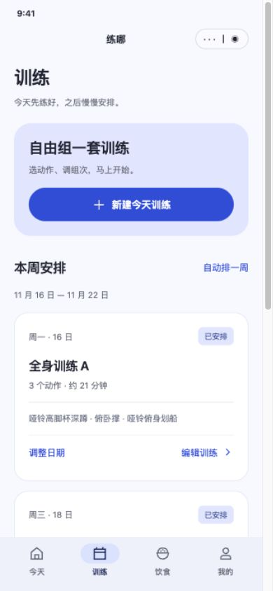
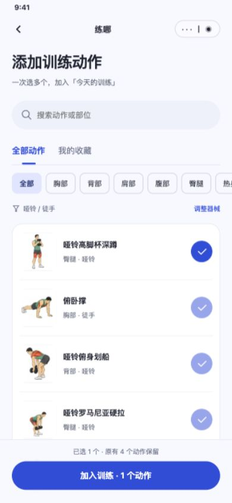
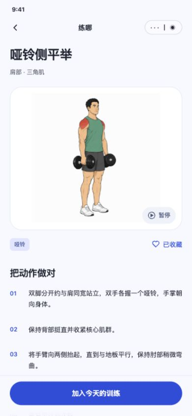
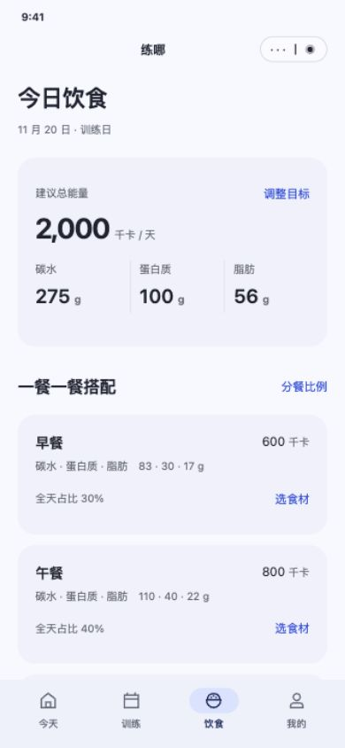
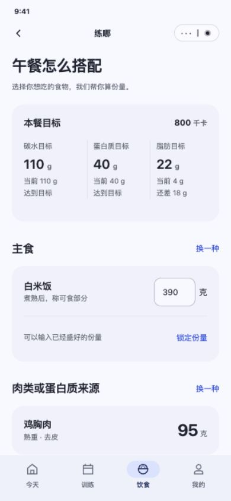
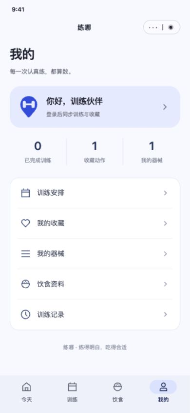
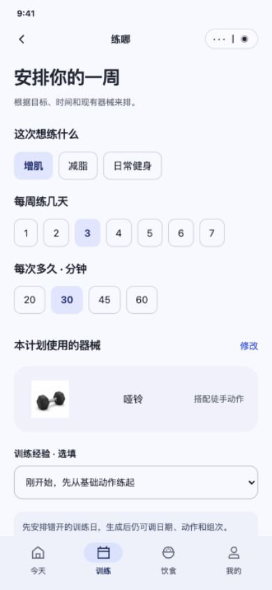
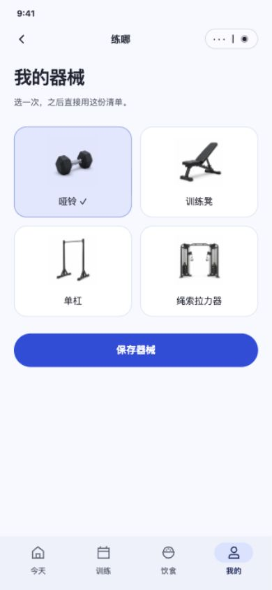
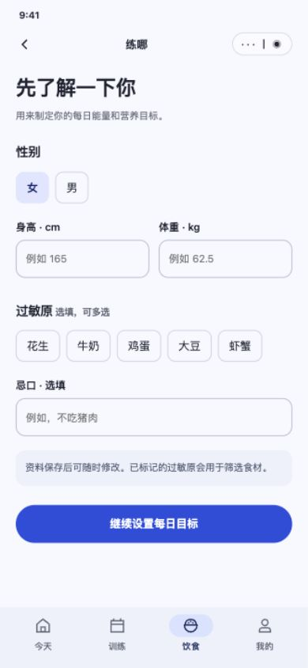
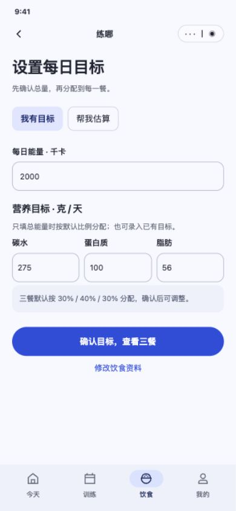
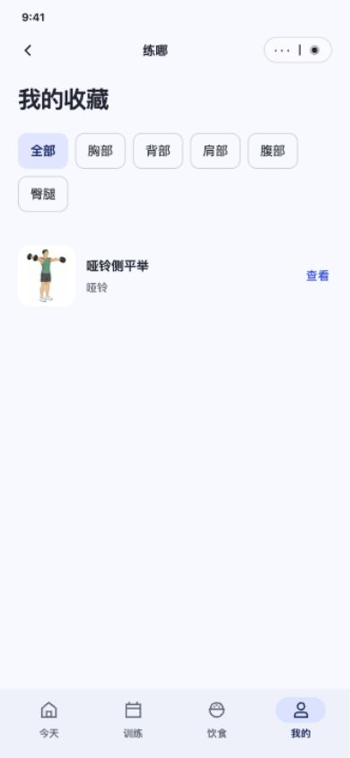
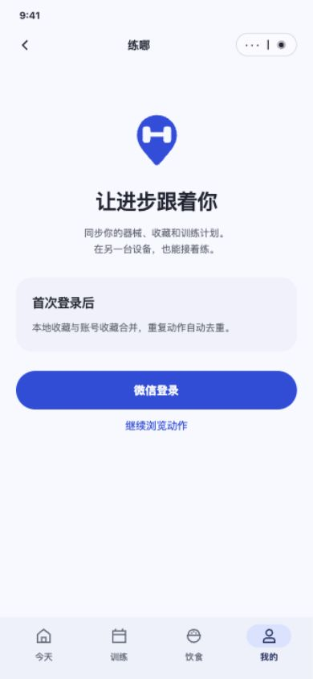
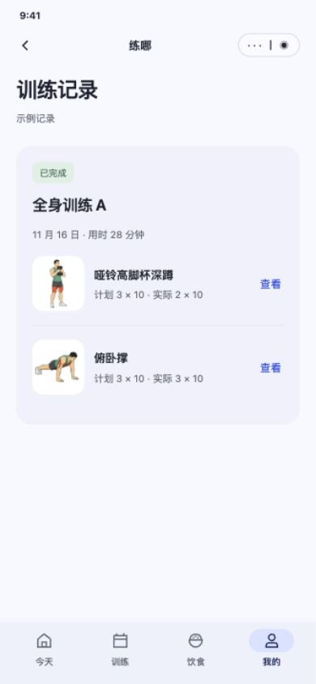
建议体验：今天 → 新建今天训练 → 添加动作 → 选 2～3 个 → 加入训练 → 改组次 → 保存。草稿仅保存于当前浏览器。